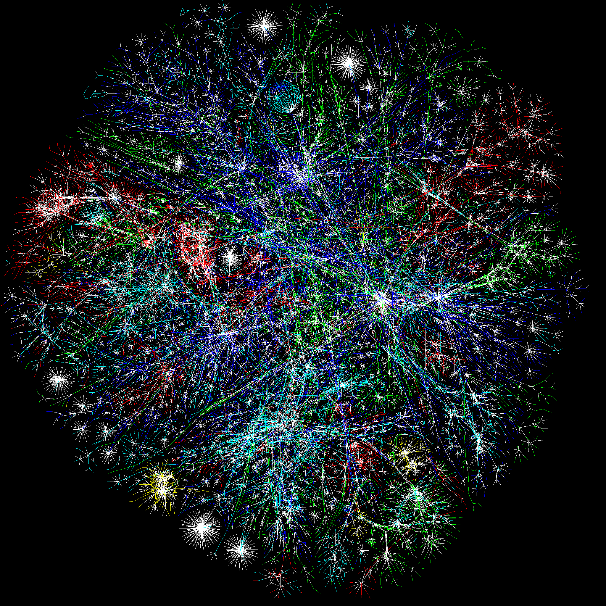
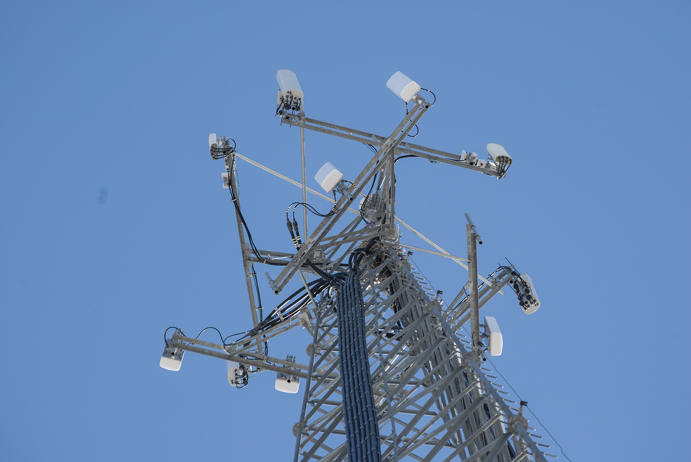
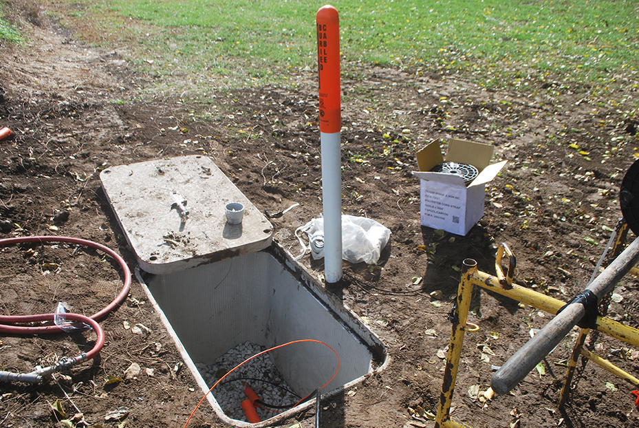
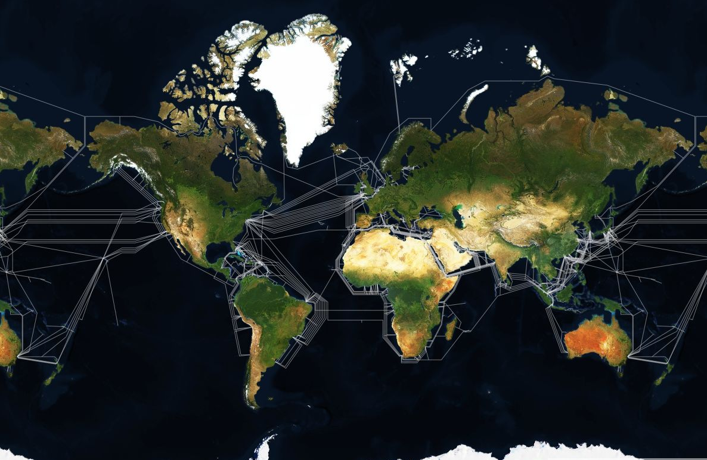
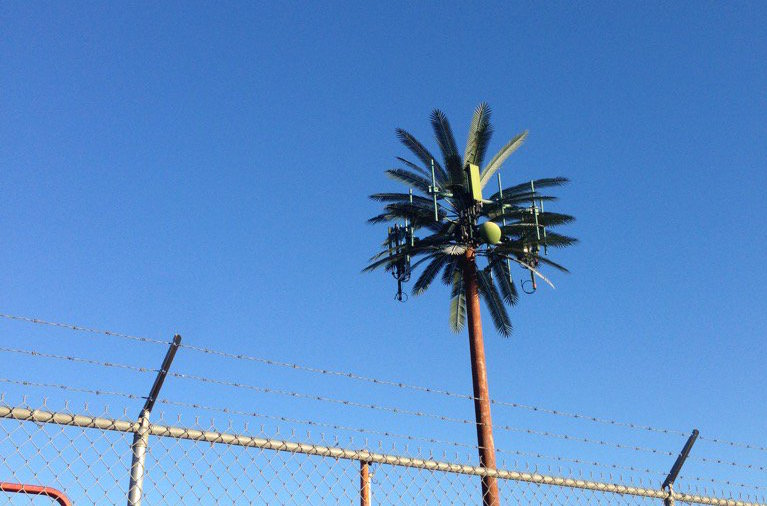
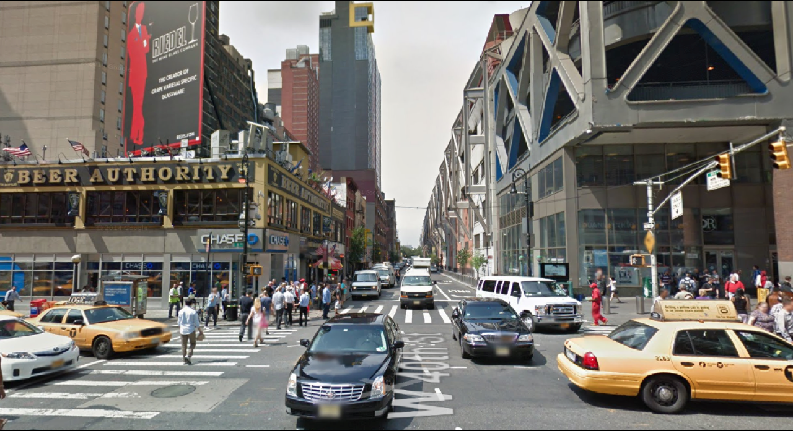
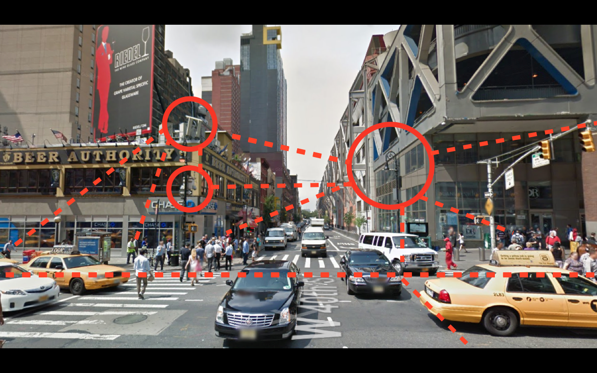

hello!
what is the internet made of?
OK but what is the internet actually?
how does it work?
How do you see the internet?
what does the internet look like?

the internet is a pile of stuff



this is what amazon.com looks like
none of this stuff is really secret, but you kind of have to act like a detective
the internet is sometimes disguised

what we're going to do:
find out how to see the internet anywhere


find out how the internet works
like how it actually works
make a model of how it works
no computers
you will feel like this
and when other people are like this
you can tell them why it's really cool
you will be an internet detective
that's awesome
questions?